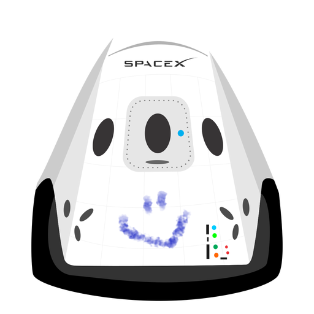

Hyperblog
Tu Blog de confianza
Este es el título atractivo e interes ante del post
Y este es el párrafo de inicio donde vamos a explicar las cosas increíbles que se pueden hacer con ramas

Los Blogs son la mejor forma de compartir información y tus ideas. Mucho mas que ir a conferencias o salir en Youtube. Excepto si eres un Rock Star. Pero estadísticamente no lo eres... por ahora
Suscríbete y dale like